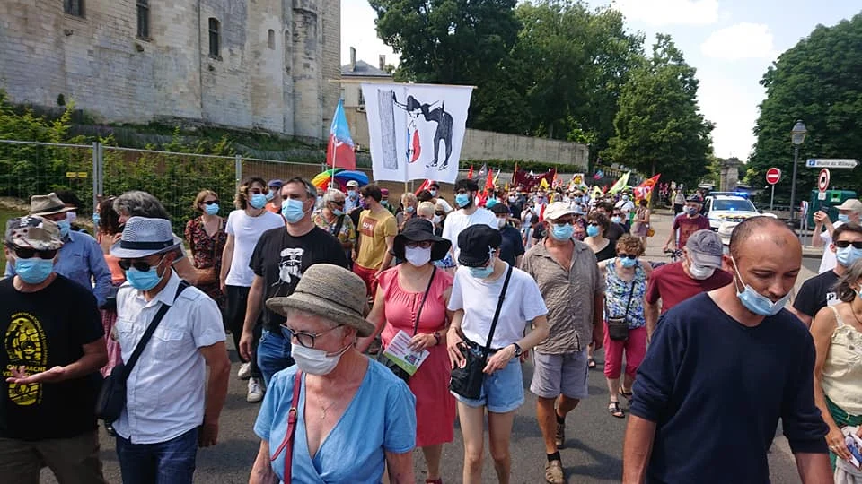
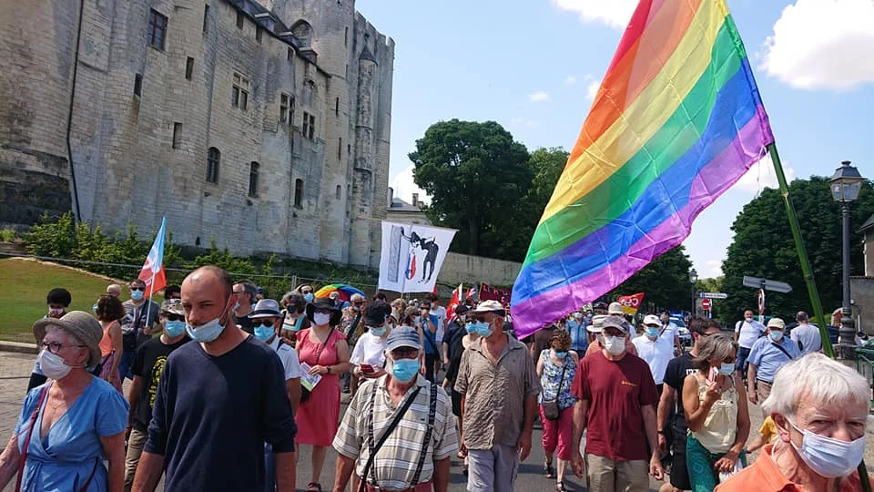
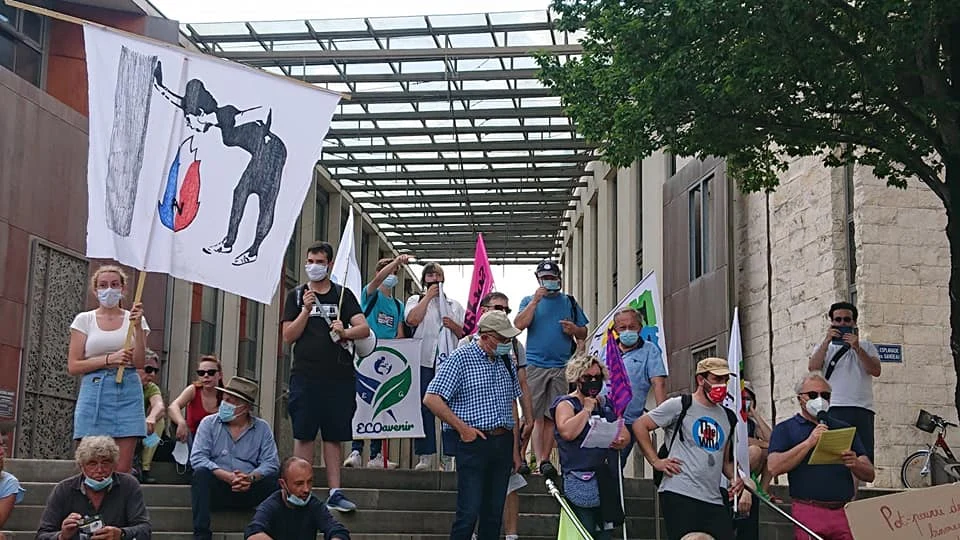
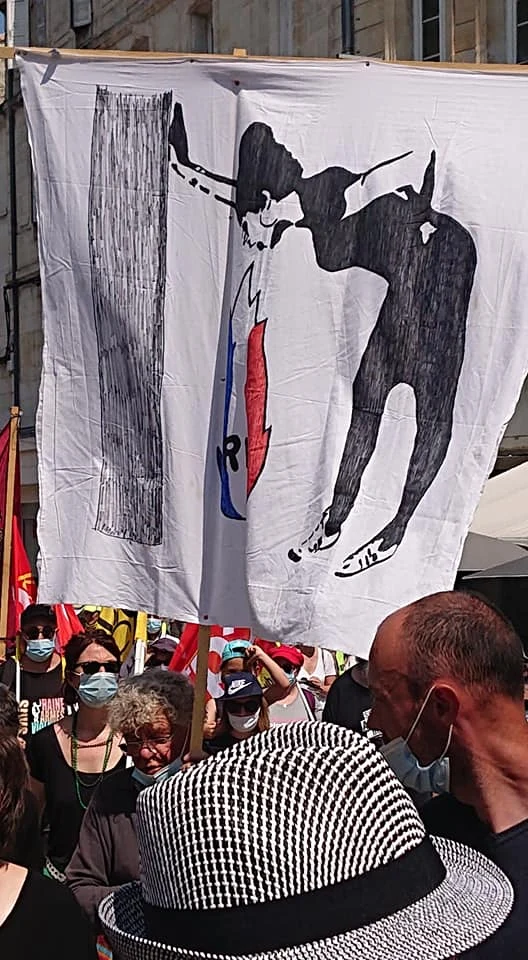

Compte rendu
Le 12 juin à Niort, des centaines de personnes pour les libertés
Date indiquée par Facebook · 14 juin 2021
Repères éditoriaux
Le 12 juin 2021, plusieurs centaines de personnes ont marché à Niort pour défendre les libertés et refuser le racisme et les idées d’extrême droite, selon notre compte rendu.
Texte conservé avec la publication
Marche pour les libertés et contre les idées d’extrême droite a Niort.
Samedi 12 juin, plusieurs centaines de personnes ont répondu à l'appel national de syndicats, associations, partis politiques, medias et collectifs. Les prises de parole à l'issue de la marche sont venues faire écho aux slogans entendus durant le parcours "Discrimination NON, Solidarité OUI". Il y a danger à la banalisation des idées d’extrême droite, c'est inacceptable. Leur programme est antisocial, il stigmatise certaines catégories dans la population, il a la volonté de satisfaire plus le patronat que les salariés... A nous de montrer que le vote d'extrême droite est une impasse.




Sources
Archive rouge · export Facebook · AR-0002-FB-02027
À lire aussi · Niort. L’appel du 12 juin pour les libertés et contre le racisme